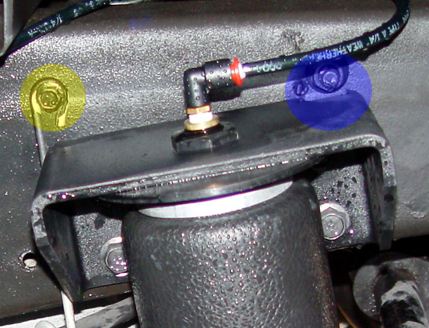

|
Helper Airbags |
|
|
|
Lowering the truck greatly reduces the load carrying capacity. With my 750 pound bike in the back, I was pretty
much on the bump stops.
Helper airbags can get the load capacity back to stock or better. I used Air Lift Slam Air bags (about $200). |
| Because of my extreme rear drop, I had to fabricate the mounts a bit. The part welded to the frame is a section of another set of brackets that I had. Also note that the bag inlets shown are too tall. When I went to install the bed, the tops of the elbows would hit the bed. So I swapped them out with some low profile brass elbows. |
|
Stock, the bags mount directly to the leafs. But when I switched over to fiberglass leafs, that was no longer possible. The bags are now mounted directly to the center pins of the leafs. I just used longer pin bolts (photos shown on the page linked above). The bags rubbed just a bit on the u-bolt nuts. So I fabbed some spacers out of 3.25" round nylon stock purchased from McMaster Carr. |
|
In Version 3.0 of
my suspension
, the airbags are now more than just "helpers." They are an integral part of the spring rate. So I upgraded
to an in-cab controller.
The Air Lift SureSet offers digital control with no airlines running into the cab, and the ability to store a pre-set pressure. Any time the ignition is on, the controller will make sure that the bags are properly inflated. Not bad for a little over $200. |
|
I mounted the solenoid assembly to the frame with an aluminum C-channel to space it out from the frame so that my main power cables could run behind it. The stub lines with the fill valves shown are just temporary. These lines actually run out to valves in the wheel wells for emergencies, or to be able to raise the rear without turning the ignition on.
|
|
i nstallation (on stock-ish rear suspension): |
|
The following describes installation when I was running a "normal" drop with Hotchkis leafs, and no electronic controller. The generic instructions are pretty good. Just make the test fixtures as shown in the instructions (the white test fit rod is shown in the photo to the left) and use them to install the mounts as shown below. Basically, you jack up the back and put the axle on jackstands. You bolt the lower mount of the test fixture to the top of the leaf with u-bolts. You the mark and drill the holes for the upper mounts. You then remove the test rod and bolt on the upper mounts. Install the nipples in the tops of the airbags, slip them in, install the airlines, and inflate the bags to 10 PSIG. Tighten everything down and you're done. There may be interference with the passenger side shock mount. I had to grind off one side of the head of a bolt (yellow in the below photo) and put it in with the head facing in. I also had to leave out one of the washers on the bolt below it. I later solved the problem by removing the passenger shock mount entirely (to reverse the shock). |
| An air ratchet is a major timesaver. |
|
BE CAREFUL: On the driver's side, you will be drilling right near the fuel lines, a power harness, and the fuel tank. So that I could move these lines out of the way, I clipped off the ends of the plastic clips and shoved the cut ends of the clips through. After this photo was taken, I reversed the mount to have the bolt heads on the inside to prevent chafing of the wiring and lines. |
|
 Also, my driver's side mounting position interfered with an existing nut. I clearanced the upper mount with a die grinder (area in blue below) and shot some paint on the wound to protect against rust. Also, the emergency brake cable stay (area in yellow below) had to be moved.
|
|
I installed the filler valves in the fender wells and tie-wrapped the air lines up the fender supports. Using jackstands, this job was a lot tougher than it looks. If I had to do it over again, I would take it to a shop with a lift and have them install the bags. |